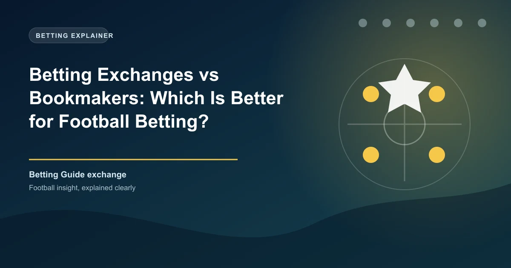

Betting Exchanges vs Bookmakers: Which Is Better for Football Betting?

One of the most important decisions any football bettor makes is choosing where to place their bets. The traditional choice has always been a bookmaker — but betting exchanges like Betfair and Matchbook have changed the game. For Kenyan and Nigerian bettors, understanding this difference is crucial to maximizing value.
What Is a Bookmaker?
A bookmaker (also called a sportsbook) is a company that sets odds and accepts bets against those odds. The bookmaker effectively becomes the counterparty to your bet. If you win, the bookmaker pays you. If you lose, they keep your stake. The bookmaker's margin (known as the"juice" or "vig") is built into every odds line.
Examples: Betway, 22Bet, Bet9ja, Bet365
What Is a Betting Exchange?
A betting exchange is a peer-to-peer platform where bettors bet against each other — not against the house. The exchange matches backers (those who think an outcome will happen) with layers (those who think it won't). The exchange makes money by charging a small commission on winning bets, typically 2–5%.
The key difference: on an exchange, you can both back AND lay — meaning you can bet for AND against an outcome.
On a traditional bookmaker, you can only bet FOR an outcome. On an exchange, you can bet AGAINST it. Lay a team to lose = backing everyone else who thinks they'll lose. This creates hedging and trading opportunities impossible with a standard bookmaker.
Head-to-Head Comparison
| Feature | Bookmaker | Betting Exchange |
|---|---|---|
| Odds quality | Includes built-in margin (juice) | Typically 20–50% better odds |
| Commission | Built into odds (hidden) | 2–5% on winnings (visible) |
| Lay betting | Not available | Available — bet against outcomes |
| Cash out | Available on most | Available via green/grey up |
| In-play betting | Good on top platforms | Excellent, especially Betfair |
| Markets breadth | Extremely wide | Concentrated on major events |
| Liquidity (African leagues) | Moderate to high | Low — mostly top leagues |
| Welcome bonus | Common | Rare |
| Ease of use | Very easy | Slightly steeper learning curve |
Why Exchanges Often Have Better Odds
Bookmakers set odds with a margin to guarantee profit. A typical Premier League match might have a 105% book (5% margin). Exchanges, being peer-to-peer, have no such built-in floor. Odds on popular markets like the Premier League 1X2 often show just 101–103% overrounds — significantly better for the bettor.
Pinnacle, known for sharp odds, operates somewhere between a bookmaker and exchange in pricing philosophy.
The Exchange Advantage for Football
Exchanges shine for trading — buying and selling bets at different prices. Example: Back a draw pre-match at 3.50, then lay it at 1.90 after a goalless first half. You've locked in profit regardless of the final score. This"greening up" strategy is a cornerstone of professional matched betting.
The African Market Reality
In Kenya and Nigeria, bookmakers dominate — and for good reasons:
- Exchanges have limited liquidity for African leagues and lower-tier European matches
- Many exchanges don't support M-Pesa or Naira deposits
- Bookmaker bonuses (deposit matches, free bets) add real value for beginners
- Simpler interface for new bettors
Betfair does have the most liquidity and accepts international users, but the African leagues they cover are limited compared to what local bookmakers offer.
Pro Tip: Use Both
The smartest approach for serious Kenyan and Nigerian bettors is to use bookmakers for African leagues and exchanges for major European matches. This gives you access to the best odds on the biggest events while maintaining access to local market coverage. Many matched bettors use Betfair Exchange for trading and Betway for daily action.
Who Should Use Each?
- You're a beginner — simplicity matters
- You bet mainly on African leagues
- You want welcome bonuses and promotions
- You prefer accas with insurance and boosts
- You deposit via M-Pesa or Nigerian bank transfer
- You want the best odds on top leagues
- You're interested in matched betting or arbing
- You want to lay bets (bet against outcomes)
- You're comfortable with a steeper interface
- You're trading in-play on Premier League/UCL matches
The Bottom Line
Neither exchanges nor bookmakers are universally better. For Kenyan and Nigerian bettors focused on African leagues and mid-tier European competitions, Betway and Bet9ja offer unmatched convenience. But for value-conscious bettors on Premier League, Champions League, and other major tournaments, a Betfair account alongside a bookmaker gives you the best of both worlds.
Get Free Football Predictions
Use WinFulltime's daily predictions to find value on both exchange and bookmaker markets.
View Today's Predictions →